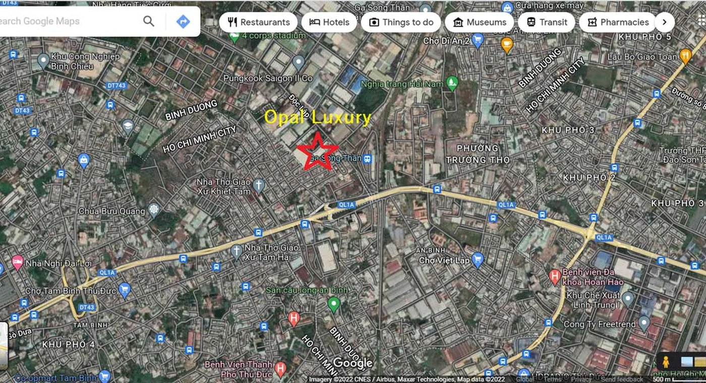

Sau sáp nhập, cụm từ “Bình Dương thuộc không gian TP.HCM mở rộng” xuất hiện dày hơn trong tư vấn bán hàng. Điều này có cơ sở về liên kết vùng, nhưng nếu biến nó thành lý do duy nhất để xuống tiền thì rất nguy hiểm. Một tài sản không tự nhiên tốt hơn chỉ vì thay đổi địa giới. Nó tốt hơn khi hạ tầng làm thời gian di chuyển ngắn lại, dân cư về ở thật nhiều hơn, dịch vụ đầy đủ hơn và dòng tiền thuê có thể kiểm chứng được.
1. Sau sáp nhập, Bình Dương không còn được đọc như một thị trường “vùng ven” đơn giản
Việc sắp xếp bộ máy TP.HCM mới trên cơ sở hợp nhất TP.HCM, Bình Dương và Bà Rịa - Vũng Tàu tạo ra một câu chuyện rất mạnh về quy mô đô thị. Trung tâm Báo chí TP.HCM cho biết HĐND của ba địa phương được hợp thành HĐND TP.HCM mới, còn các cơ quan chuyên môn được tổ chức lại trên cơ sở ba địa phương. Với thị trường nhà ở, điều này làm thay đổi cách nhà đầu tư định vị Bình Dương: từ “tỉnh giáp TP.HCM” sang “vành đai cung ứng nhà ở của siêu đô thị”.
Nhưng thị trường địa ốc luôn có hai lớp: lớp kỳ vọng và lớp sử dụng. Lớp kỳ vọng đẩy giá đi rất nhanh, đặc biệt ở Thuận An, Dĩ An, Thành phố mới Bình Dương. Lớp sử dụng thì chậm hơn: nó phụ thuộc vào thu nhập người mua, thời gian đi làm, trường học, bệnh viện, chất lượng quản lý tòa nhà và tiền thuê thực nhận mỗi tháng.
Góc nhìn KINGMANS: sáp nhập là biến số vĩ mô tích cực, nhưng không phải “giấy bảo hành” cho lợi nhuận. Người mua vẫn phải quay về ba câu hỏi cũ: pháp lý đã đủ chưa, giá vào đã hợp lý chưa, và ai sẽ mua hoặc thuê lại tài sản này?
2. Nguồn cung tăng mạnh nhưng nhà vừa túi tiền lại hẹp dần
Báo Đấu thầu dẫn nhận định từ các đơn vị nghiên cứu như Savills, CBRE và Cushman & Wakefield rằng phần lớn nguồn cung căn hộ mới của khu vực phía Nam đang tập trung ở Bình Dương, nổi bật là Dĩ An, Thuận An và Thành phố mới. Đây là điểm tích cực: thị trường có hàng hóa, có chủ đầu tư tham gia và có thanh khoản.
Điểm cần tỉnh táo nằm ở mặt bằng giá. Bài viết của Báo Đấu thầu ghi nhận giá căn hộ sơ cấp Bình Dương cuối năm 2025 đã vượt mốc 2.000 USD/m²; nhiều dự án mới tại Dĩ An và Thuận An được chào quanh vùng 60-70 triệu đồng/m². Nếu so với trung tâm TP.HCM thì mức này vẫn thấp. Nhưng nếu so với thu nhập phổ biến của người mua ở thực tại khu vực, đó không còn là vùng giá dễ thở.
Vì vậy, cụm từ “Bình Dương vẫn rẻ hơn TP.HCM” cần được đọc lại. Rẻ hơn không có nghĩa là rẻ. Rẻ hơn cũng không đồng nghĩa với còn biên tăng giá tốt. Người mua cần so sánh bằng tổng giá trị căn, số tiền vay, chi phí hoàn thiện, phí quản lý, thuế phí chuyển nhượng và mức thuê ròng có thể đạt được.

3. Ba nhóm khu vực đáng theo dõi trong năm 2026
Thuận An: lợi thế kết nối, nhưng giá đã phản ánh nhiều kỳ vọng
Thuận An hưởng lợi rõ từ Quốc lộ 13, Aeon Mall, các bệnh viện quốc tế và khoảng cách gần TP.HCM. Đây là khu phù hợp với nhóm mua ở thật, chuyên gia thuê và nhà đầu tư muốn tích sản trung hạn. Tuy nhiên, với các dự án mới trên trục chính, giá bán đã bao gồm một phần kỳ vọng hạ tầng. Nếu mua để đầu tư, cần tính lợi suất thuê ròng chứ không nên chỉ nhìn mức tăng giá của giai đoạn trước.
Dĩ An: cửa ngõ TP.Thủ Đức, phù hợp chiến lược thuê nhưng phải lọc vị trí
Dĩ An mạnh nhờ giáp TP.Thủ Đức, gần Sóng Thần và các cụm việc làm lớn. Các dự án như Opal Luxury cần được đặt trong bảng so sánh với căn hộ TP.Thủ Đức, căn hộ quanh Xa lộ Hà Nội và nhóm sản phẩm gần khu công nghiệp. Điểm cần kiểm tra là môi trường sống thực tế, tiếng ồn, mật độ xe, tiến độ hạ tầng và pháp lý từng giai đoạn.
Thành phố mới Bình Dương: câu chuyện dài hơi hơn
Thành phố mới phù hợp hơn với người mua có tầm nhìn nắm giữ dài, chấp nhận chờ quá trình lấp đầy đô thị. Lợi thế là quy hoạch, hành chính, dịch vụ và quỹ đất; điểm cần kiểm tra là tốc độ hình thành cộng đồng cư dân, khả năng khai thác thuê và thanh khoản thứ cấp.
4. Hạ tầng là chất xúc tác, không phải lý do để bỏ qua kỷ luật giá
Vành đai 3 TP.HCM là một trong những động lực lớn của khu vực. Báo Lâm Đồng dẫn thông tin tiến độ cho thấy dự án có thể hoàn thành theo hai giai đoạn trong năm 2026, trong đó một phần tuyến chính dự kiến đưa vào sử dụng trước ngày 30/9/2026 và hoàn thiện toàn tuyến chính vào cuối năm 2026. Đoạn qua Bình Dương cũng nằm trong cấu phần quan trọng của tuyến.
Quốc lộ 13 cũng tiếp tục là trục cần theo dõi. Khi đoạn kết nối TP.HCM được xử lý tốt hơn, các khu Thuận An, Vĩnh Phú, Lái Thiêu sẽ có thêm lực đẩy về di chuyển. Nhưng hạ tầng càng được truyền thông nhiều, giá càng dễ bị kéo lên trước khi lợi ích sử dụng thật xuất hiện. Nhà đầu tư nên mua phần giá trị đã nhìn thấy, không mua toàn bộ phần kỳ vọng tương lai.
| Yếu tố | Tín hiệu tốt | Điểm cần kiểm tra |
|---|---|---|
| Sáp nhập TP.HCM | Tăng liên kết vùng, tăng nhận diện đô thị | Giá bán đã neo theo kỳ vọng quá xa chưa |
| Vành đai 3 | Kết nối logistics và đô thị tốt hơn | Tiến độ từng đoạn, nút giao thực tế, thời gian vận hành |
| Quốc lộ 13 | Trục thương mại - dịch vụ rõ ràng | Đoạn nào đã hoàn thiện, đoạn nào còn là kỳ vọng |
| Nguồn cung căn hộ | Nhiều lựa chọn, thị trường có thanh khoản | Pháp lý, tổng giá trị căn và năng lực hấp thụ thật |
5. Chiến lược mua an toàn: chia người mua thành ba nhóm
Nhóm mua ở
Không nên chạy theo dự án đang nóng nhất. Hãy chọn khu vực giảm thời gian đi làm, có tiện ích thật và tổng chi phí sở hữu không làm đời sống bị bóp nghẹt. Nếu phải vay, số tiền trả ngân hàng sau ưu đãi nên nằm trong vùng kiểm soát, tốt nhất không vượt 35-40% thu nhập ròng gia đình.
Nhóm đầu tư cho thuê
Không dùng giá thuê kỳ vọng trong brochure. Hãy khảo sát dự án đã bàn giao trong bán kính 2-3 km, trừ đi phí quản lý, phí nội thất, thời gian trống phòng và chi phí môi giới. Một căn hộ có thể “cho thuê được” nhưng chưa chắc là khoản đầu tư tốt nếu lợi suất ròng quá thấp so với lãi vay.
Nhóm tích sản
Ưu tiên pháp lý sạch, vị trí khó thay thế, chủ đầu tư có năng lực và cộng đồng cư dân có khả năng hình thành. Với nhóm này, tầm nhìn nên là 3-5 năm, không nên dùng toàn bộ kế hoạch đầu tư dựa trên việc sang nhượng trong 6-12 tháng.
6. Checklist KINGMANS trước khi xuống tiền
- Đối chiếu pháp lý: 1/500, giấy phép xây dựng, điều kiện mở bán, bảo lãnh ngân hàng.
- So sánh tổng giá trị căn, không chỉ giá/m².
- Kiểm tra tiến độ công trường và lịch thanh toán sau giai đoạn ưu đãi.
- Khảo sát giá thuê thực tế tại dự án đã bàn giao quanh khu vực.
- Tính kịch bản lãi suất thả nổi cao hơn hiện tại 1,5-2%.
- Đặt câu hỏi: nếu cần bán lại sau 24 tháng, ai là người mua tài sản này?
Kết luận: Bình Dương vẫn có cơ hội, nhưng không còn dễ mua theo phong trào
Bình Dương sau sáp nhập TP.HCM là thị trường đáng theo dõi. Nguồn cung lớn, hạ tầng có câu chuyện, lực cầu ở thực vẫn còn và các đô thị như Thuận An, Dĩ An, Thành phố mới đang được định vị lại. Nhưng chính vì câu chuyện hấp dẫn hơn, giá cũng dễ bị đẩy đi nhanh hơn.
Chiến lược đúng trong năm 2026 không phải là mua vì sợ lỡ sóng. Chiến lược đúng là mua khi dự án trả lời được ba điều: pháp lý đủ rõ, dòng tiền đủ chịu và giá vào chưa vượt quá giá trị sử dụng thật. Ở một thị trường đang trưởng thành, sự tỉnh táo thường quan trọng hơn tốc độ.
Câu hỏi thường gặp
Bình Dương sau sáp nhập TP.HCM có còn là vùng giá mềm không?
Không còn mềm như trước. Một số khu vực đã tiệm cận mức giá từng thấy ở vùng ven TP.HCM. Người mua nên đánh giá bằng tổng giá trị căn và khả năng trả nợ, không chỉ bằng so sánh giá/m².
Có nên mua căn hộ Bình Dương năm 2026 không?
Có thể mua nếu dự án có pháp lý rõ, tiến độ thật, giá vào hợp lý và có nhu cầu ở hoặc thuê kiểm chứng được. Không nên mua chỉ vì thông điệp hưởng lợi sáp nhập.
Khu nào đáng theo dõi nhất?
Thuận An phù hợp kết nối Quốc lộ 13, Dĩ An phù hợp cửa ngõ TP.Thủ Đức và lực thuê công nghiệp, còn Thành phố mới phù hợp với chiến lược nắm giữ dài hơn.